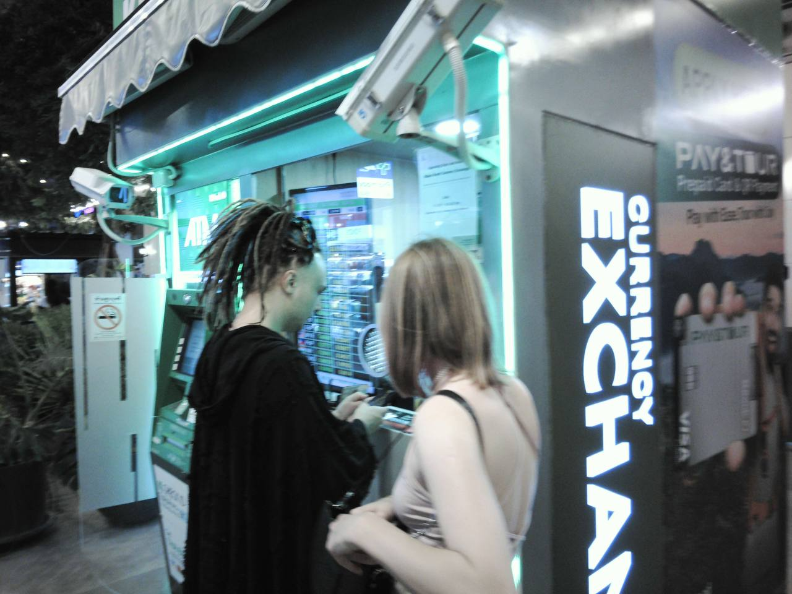
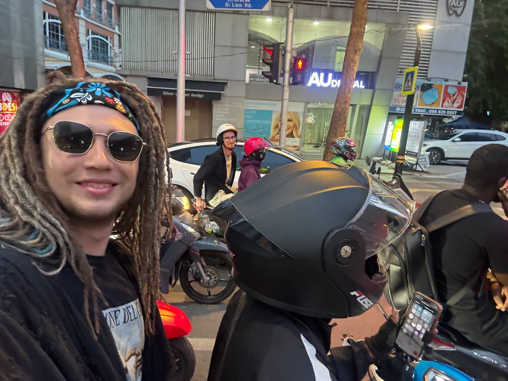
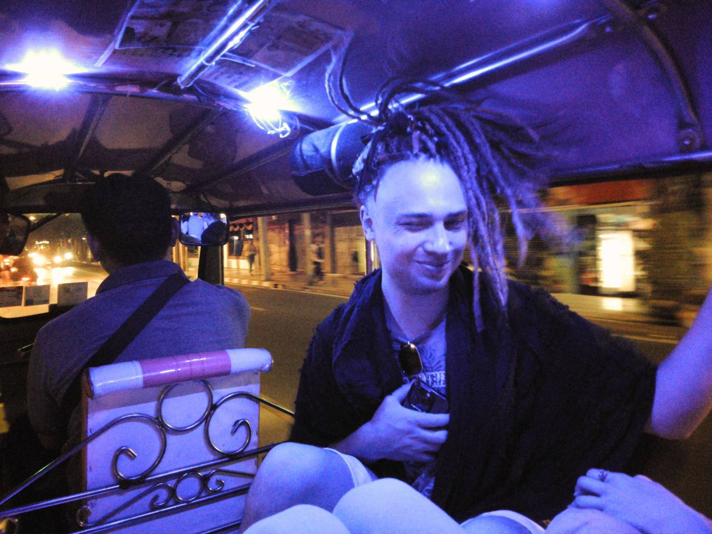
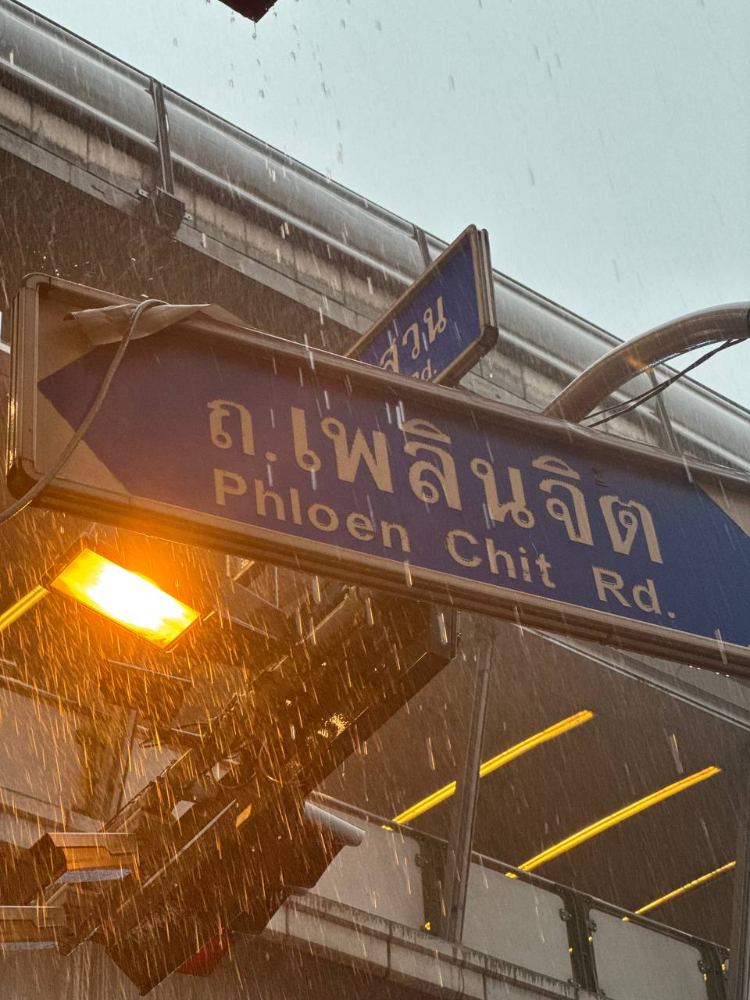
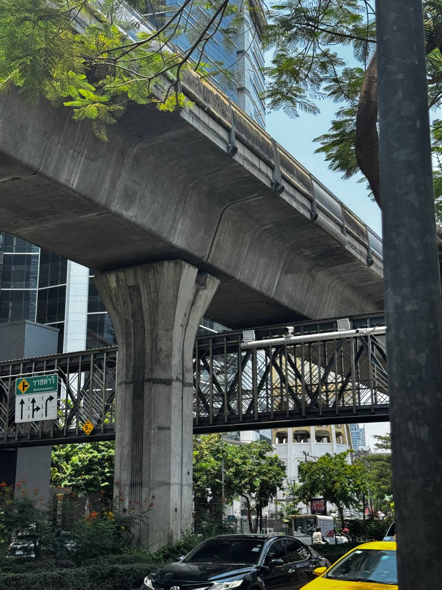
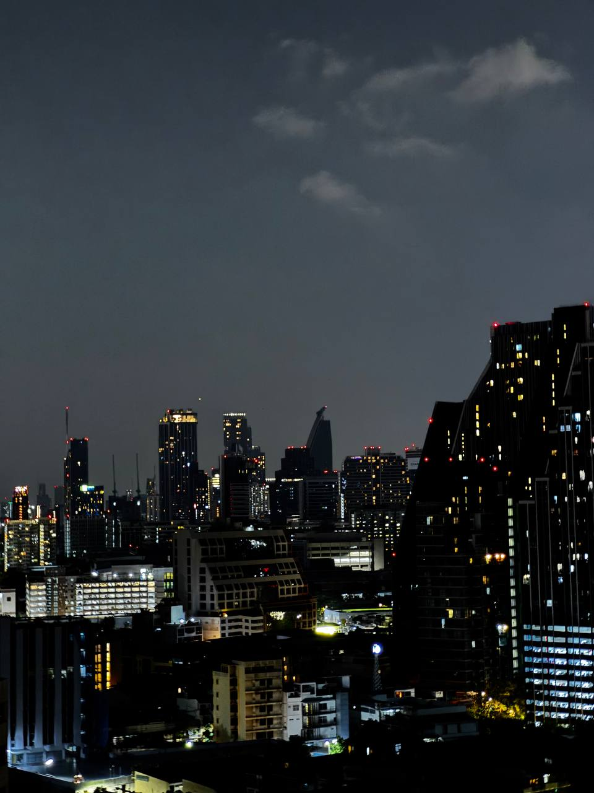

Cобрал заметки про деньги, транспорт, еду и местные приколы.
💵 Наличка и карты
Примерно в половине мест — только наличка. За оплату картой часто добавляют небольшую наценку. Лучше иметь баты при себе.
Карты работают хорошо в такси (Bolt, Grab), ресторанах. Оплата в 7-Eleven при суммах от 200 бат. Грузинские карты Credo и TBC принимают без проблем.

🏧 Снятие наличных
Банкоматов много, но везде есть фиксированная комиссия — 200-350 бат за транзакцию, независимо от суммы. Снимайте сразу побольше — это выгоднее, чем несколько маленьких снятий.
Совет: снимайте от 5000–10 000 бат за раз.
📶 Мобильная связь
Туристическую симку продают прямо в 7-Eleven и в аэропорту — цены одинаковые. Пакеты стоят в среднем 500–900 бат в зависимости от количества дней. Покупаете, втыкаете, интернет сразу работает. Для оформления нужен паспорт.
Связь быстрая, ловит даже на парковке на трассе. Звонил родителям в дороге на ВК. Раздача интернета с телефона работает:
ноут через хотспот показал 125 Мбит/с в speedtest.
Дешевле: купить eSIM заранее, ещё до поездки.
🚕 Такси: Bolt и Grab
Оба приложения работают отлично. Bolt обычно дешевле. С грузинских карт оплата проходит без проблем.
Межгород тоже работает — ездили в Хуа Хин и на Train Market (~1.5 часа от Бангкока). Можно отправить передачку на байке или вещи на грузовичке.
Яндекс Такси в Таиланде нет.

🛺 Тук-Тук
Стоит дороже такси — это больше прикол, чем транспорт. Торговаться надо, не бойтесь. В среднем сбивал цену в 1.5–2 раза.
Достиг цены в 200–400 бат в зависимости от расстояния. Местная тайка рядом с нами торговалась — лучше нас не получилось. Вывод: первая цена — для туриста, после торга уже как для своих.

🍜 Еда и магазины
7-Eleven — легенда. Есть везде, работает всегда, есть всё. Еда -- советую эпичные бутеры с сосисками, напитки, средства гигиены, зарядки, переходники.
Доставка еды — через Grab. В Bolt доставки нет.
Ночных рынков и кафе огромное количество — можно питаться дёшево и вкусно везде.
👕 Одежда и погода


Жара. Лёгкая кофта не нужна — она так и осталась в рюкзаке. Открытая обувь — правильный выбор.
Штаны со слонами -- неизбежность. Не сопротивляйтесь им. Вы всё равно рано или поздно купите штаны со слонами. Даже местные носят штаны со слонами. Штаны со слонами. Продаются везде за 100–250 бат. Это лёгкость, стиль, и грация кстати.
🌃 Ночной Бангкок

🙏 Навязчивые продавцы
Встречаются часто. Два рабочих способа:
Легко: улыбнуться и сказать «Thank you» — вежливо уходят.
Но есть способ лучше — сказать «нет» на тайском:
Если девушка — «май Ау кхаа»
Продавцы умиляются тайскому и вежливо отходят.
😄 Прикол про 555
По-тайски цифра 5 читается как «ха». Смех звучит как «ха-ха-ха» — то есть «пять-пять-пять».
Поэтому вместо «ахаха» или «)))» тайцы пишут 55555
Частые вопросы
Треки про дорогу, свободу и всё то, ради чего стоит ехать куда-нибудь без обратного билета.
Послушать трек про путешествия